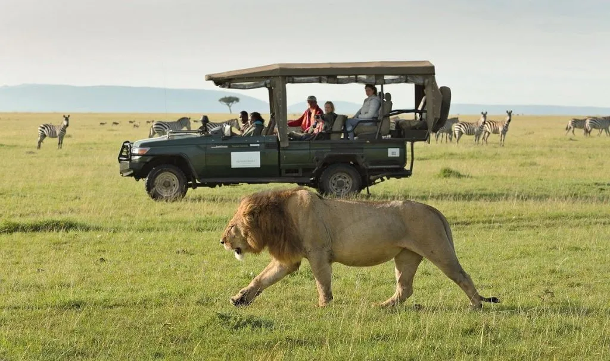

АКТУЕЛНА ПОНУДА

САФАРИ ВО МАСАИ МАРА
Масаи Мара, Кенија
25.08 - 02.09
Откријте ја дивата убавина на Кенија и доживејте незаборавно сафари во познатата Масаи Мара. Очекуваат ве бескрајни савани, диви животни и прекрасни африкански пејзажи. Во текот на патувањето ќе имате можност да видите лавови, слонови, жирафи и други диви животни во нивното природно живеалиште. Совршена понуда за љубителите на природата и авантурата.
АФРИКАНСКА АВАНТУРА
Една од најпознатите сафари дестинации во Африка, позната по бескрајните савани, богатството на дивиот свет и традиционалната култура на народот Масаи. Резерватот е дом на лавови, слонови, жирафи, зебри, гепарди и многу други животни, а особено познат е по Големата миграција, кога огромни стада гну и зебри се движат низ саваната во потрага по свежа трева и вода. Посебно незаборавно искуство е Hot Air Balloon Safari, со лет на изгрејсонце над саваната и поглед кон дивиот свет од височина, по што следува појадок во срцето на африканската природа.
Главниот и најголем град на Кенија, познат по уникатната комбинација од модерна африканска метропола, богато културно наследство и непосредна близина до дивата природа. Меѓу позначајните места се Nairobi National Museum и Kenyatta International Conference Centre, а градот нуди можност за запознавање со локалната култура, традиционалните пазари и секојдневниот живот. Особено интересна атракција е Nairobi National Park, еден од ретките национални паркови во светот кој се наоѓа во непосредна близина на голем главен град, каде што може да се видат лавови, жирафи, зебри и други диви животни.
Состанок со групата на аеродром во Скопје, 2 часа пред летот. Следува директен лет до Истамбул, па потоа директен лет кон Најроби и пристигнување на аеродромот. По завршувањето на аеродромските процедури следува организиран трансфер до Масаи Мара и сместување. По сместувањето следува време за одмор и освежување. Попладнето е предвидено за прва прошетка низ околината. Вечерта е слободна за вечера и одмор. Ноќевање во сафари-лодж.
Појадок во сафари-лоджот и организирана прошетка низ Најроби. Следува посета на Nairobi National Museum и разгледување на Kenyatta International Conference Centre. Потоа продолжување кон централниот дел на градот и локалните пазари. Предвидено е слободно време за ручек, кафе, шопинг и фотографирање. Во попладневните часови следува продолжување на разгледувањето. Вечерта е слободна за индивидуални активности. Ноќевање во сафари-лодж.
Појадок и организирано тргнување кон Nairobi National Park. Следува Safari Game Drive со можност за набљудување на лавови, жирафи, зебри и други диви животни. Предвидено е време за фотографирање и уживање во природата. По завршувањето следува враќање во сафари-лоджот и слободно попладне. Вечерта е слободна за одмор и вечера. Ноќевање во сафари-лодж.
По појадокот , следува организација на групата и упатување кон Масаи Мара. По пристигнувањето следува сместување во lodge/camp во областа на резерватот. Потоа започнува првиот Safari Game Drive низ Масаи Мара. Предвидено е време за набљудување на дивиот свет и фотографирање. По сафари турата следува одмор и уживање во природата. Ноќевање во Масаи Мара.
Појадок во сместувањето и слободно време за одмор и уживање во природата. Потоа следува организиран Safari Game Drive низ Масаи Мара, со можност за набљудување на дивите животни во природна средина. Во текот на денот ќе има време за фотографирање, прошетка и уживање во прекрасните пејзажи на саваната. Попладнето е слободно за релаксација и индивидуални активности. Вечерта следува одмор и подготовка за заминување. Ноќевање во Масаи Мара.
Појадок и продолжување со истражување на Масаи Мара. Следува сафари низ резерватот, со можност за набљудување на лавови, слонови, жирафи, зебри и други диви животни. Во текот на денот е предвидено време за фотографирање и уживање во природата. По сафари турата следува одмор во сместувањето. Ноќевање во Масаи Мара.
Рано наутро следува организирано возење до местото на полетување и незаборавен лет со балон над Масаи Мара. Од височина ќе се ужива во прекрасниот изгрејсонце, бескрајните савани и дивиот свет под нас. По слетувањето следува појадок во срцето на саваната и можност за фотографирање. Потоа следува краток Safari Game Drive назад до сместувањето. Остатокот од денот е слободен за одмор и уживање во Масаи Мара. Враќање кон Најроби и ноќевање во сафари-лодж.
Појадок во сафари-лоджот, по што следува слободен ден во Најроби. Патниците ќе имаат можност индивидуално да го организираат денот, со време за прошетка, шопинг, кафе, ручек и фотографирање. Денот е наменет за одмор и слободни активности според желбите на патниците. Вечерта е слободна за вечера и индивидуални активности. Ноќевање во сафари-лодж.
Појадок во сафари-лоджот и одјавување согласно предвиденото време. По собирањето на багажот следува организиран трансфер до аеродромот. По пристигнувањето следува пријавување за летот и завршување на потребните аеродромски процедури. Потоа следува директен лет кон Истамбул, па директен лет кон Скопје. По пристигнувањето и преземањето на багажот завршува организираното патување.